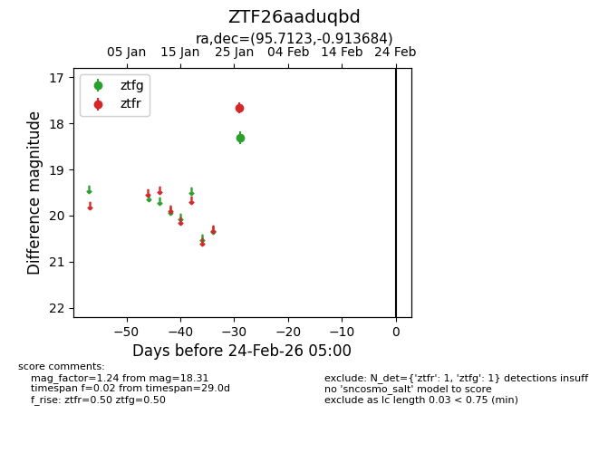
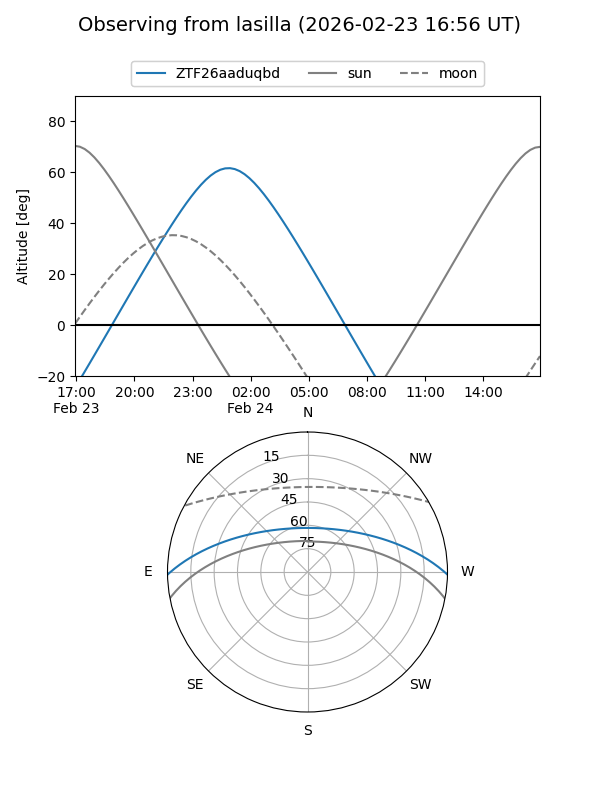
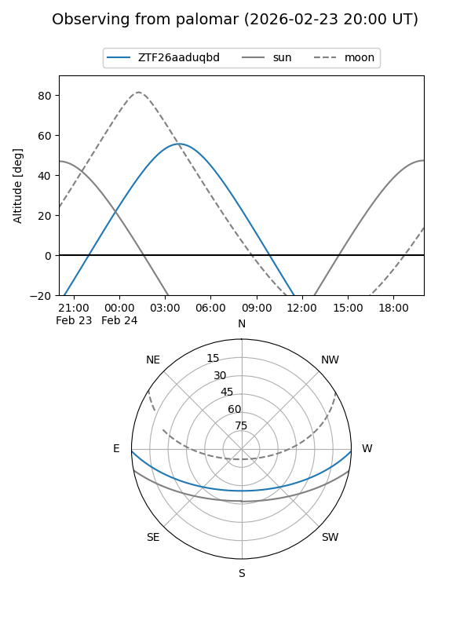

ZTF26aaduqbd
Target ZTF26aaduqbd at 2026-01-28 07:06
Aliases and brokers:
FINK: link
Lasair: link
ALeRCE: link
alt names
ZTF26aaduqbd (ztf,fink_ztf)
Coordinates:
equatorial (ra, dec) = 95.7123,-0.91368
equatorial (HMS+DMS) = 06:22:50.96,-00:54:49.26
galactic (l, b) = (210.4770,-6.77599)
Flags:
Photometry:
last ztfg=18.31, ztfr=17.66
1 ztfg, 1 ztfr detections
Lightcurve

Visibility


Additional plots